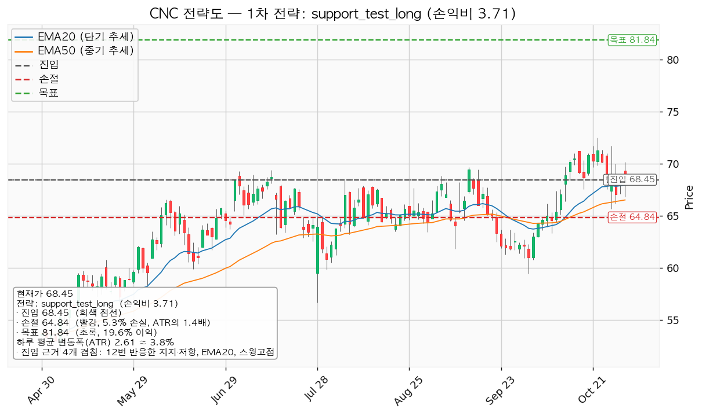
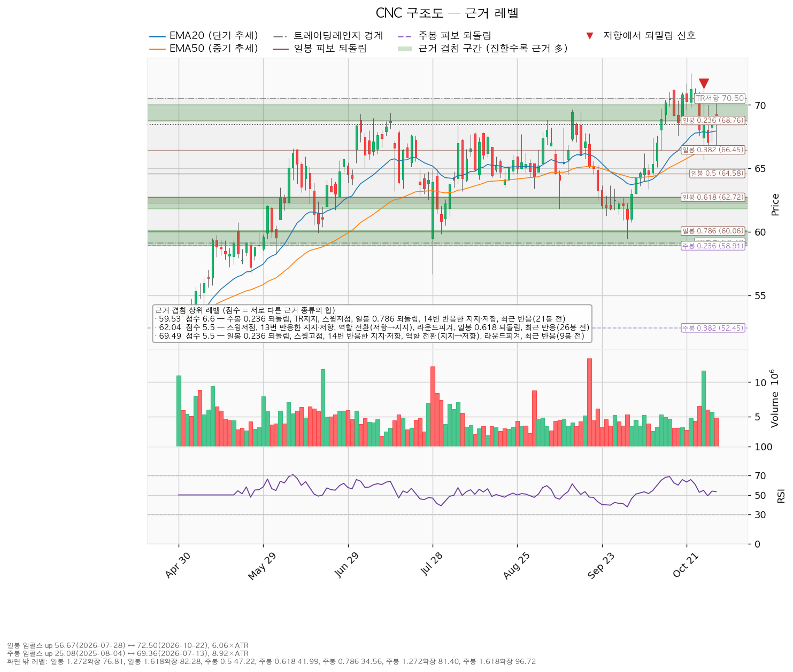
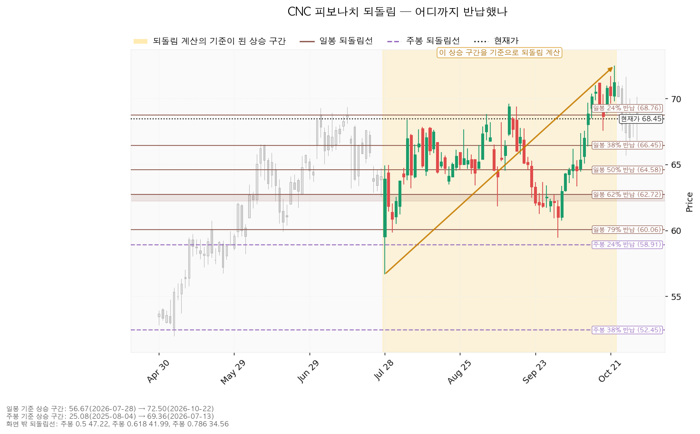
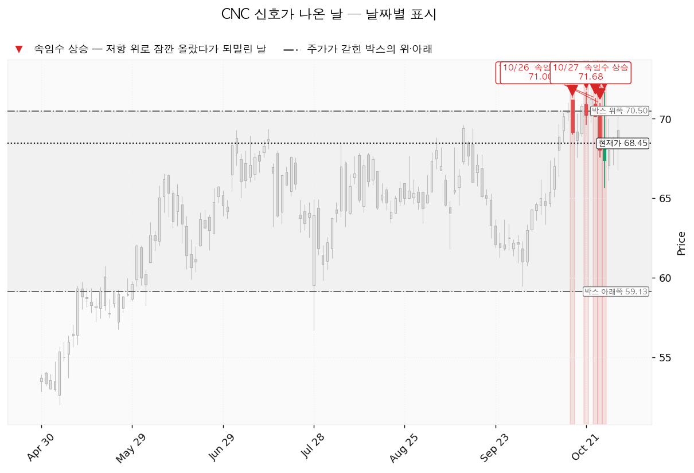

센틴(CNC)은 메디케이드·메디케어·건강보험거래소 가입자를 중심으로 관리형 건강보험을 운영하는 미국 기업입니다.
| 구분 | 가격 | 판정 방식 | 현재 상태 (현재가 68.45달러) |
|---|---|---|---|
| 진입 조건 (지지 확인 매수) | 67.10달러 | 그 위 일봉 종가 | 10/30 종가로 충족, -1.97% (0.52 ATR) 아래 |
| 집행 손절 | 64.84달러 | 장중 터치 | 진입한 경우에만 유효, 미진입 시 의미 없음 |
| 관망 종료 기준 | 65.49달러 | 진입 전 일봉 종가 이탈 → 매수 계획 종료 | -4.32% (1.13 ATR) 아래 |
| 확인선 | 70.50달러 | 일봉 종가 돌파 후 되돌림 지지 | 미돌파, +2.99% (0.78 ATR) 위. 박스 상단과 같은 가격 |
| 폐기선 | 59.13달러 | 이탈 후 3거래일 내 미회복(또는 56.51달러 아래 종가) + 반등에서 저항 확인 | -13.62% (3.57 ATR) 아래, 실무상 작동하지 않음 |
| 항목 | 내용 |
|---|---|
| 셋업 | 지지 확인 매수 · 지지 확인형 |
| 진입 | 68.45달러 (10/30 확인 종가) — 근거: 12번 반응한 지지·저항(67.10달러) + 20일선 + 스윙 고점 + 9봉 전 최근 반응 |
| 손절 | 64.84달러 — 13번 반응한 가격·66달러 라운드피겨·일봉 0.382 되돌림·50일선이 겹친 65.49~66.51달러 구간 바로 아래 |
| 목표 | 81.84달러 전량 매도 (목표 도달) — 주봉 1.272 확장 + 일봉 1.618 확장, 단일 목표 |
| 손익비 | 1:3.71 (손절 1.38 ATR) — 구조적 손절 기준 값은 따로 산출되지 않았으나 손절이 이미 지지 구간 아래에 놓인 구조적 손절이라 같은 값으로 봄 |
| 엣지 | 평균회귀 — 여러 번 지켜진 가격에서 사서 그 가격이 다시 지켜진다는 전제. 승률이 높고 이익 폭이 작은 유형(일반적 성격이며 측정값 아님) |

손익비 3.71 × 지지 확인형 × 진입 근거 4종으로 대표가 됐고, 지수 대비 20일 초과수익 +10.52%로 1.1배가 곱해졌으나 다른 두 후보는 눌림 매수(선취형, 1:1.01)와 돌파 매수(돌파 확인형, 1:0.52, 손익비 미달로 보류)라 대표는 배수 없이도 같습니다. 엣지와 목표가 맞지 않습니다: 평균회귀는 가장 가까운 저항에서 파는 것이 정합적인데, 목표 81.84달러는 박스 상단 70.50달러와 그 위 71.06·72.25달러 저항을 모두 넘어야 하는 +19.56% (5.12 ATR) 거리이고, 가격이 실제로 반응한 적이 없는 계산선입니다. 이 목표에 닿는 경로는 박스 돌파이므로 결과적으로 모멘텀 거래가 되며, 69.49달러에서 팔면 손익비는 1:0.29로 패스입니다. 집행 정책상 계획은 엔진 값 하나로 내되, 70.50달러에서 막히고 되밀리는 경우가 이 셋업의 주된 실패 경로입니다. 70.50달러를 종가로 넘으면 상승 확정으로 보고 새 셋업으로 다시 잡습니다. 분할하면 전 구간 손익비가 1:3.71에서 1:2.00으로 내려가고 본전 이동 후 최저 1:0.14라 단일 청산을 씁니다.
| 단계 | 트리거 | 행동 |
|---|---|---|
| 관찰 | 일봉 종가가 67.10달러 아래로 마감 | 되돌아 올라오면 속임수 하락일 수 있어 무효가 아닙니다. 신규 진입만 중단 |
| 경고 | 이탈 후 3거래일 안에 67.10달러를 종가로 회복하지 못함, 또는 그 전에 일봉 종가가 64.49달러 아래로 마감(하루 평균 변동폭 1배만큼 더 밀림) — 둘 중 먼저 오는 쪽 | 지지 가격 상실 가능성 우세. 반등 시 67.10달러에서의 반응 확인 |
| 무효 | 반등이 67.10달러에서 막히고 그 아래로 되밀림(지지가 저항으로 전환) | 남은 물량 전량 매도 (시나리오 폐기) |
집행 손절 64.84달러는 이 판정과 무관하게 작동하며, 경고 가격 64.49달러보다 위에 있어 경고 가격 종가가 나오기 전에 장중에 먼저 체결됩니다. 장중 일시 이탈은 어느 단계에도 해당하지 않습니다. 폐기선 59.13달러는 3.57 ATR 떨어져 실무상 무효화 기준으로 작동하지 않으며, 논지 무효화는 내년 주당순이익 컨센서스(현재 5.47달러)가 하향으로 돌아서는 경우로 둡니다(다음 실적 날짜는 확인 캘린더 참조).
| 가격대 | 겹치는 근거 |
|---|---|
| 71.06~72.50달러 | 박스 상단, 12번 반응한 가격, 72달러 라운드피겨, 10/22 스윙 고점 72.50달러 |
| 68.76~70.00달러 | 14번 반응한 가격(지지→저항), 일봉 0.236 되돌림, 스윙 고점 3개, 70달러 라운드피겨 (단기 회복선 69.49달러) |
| 67.10~68.38달러 | 12번 반응한 가격, 20일선, 스윙 고점 (진입 근거) |
| 65.49~66.51달러 | 13번 반응한 가격, 66달러 라운드피겨, 일봉 0.382 되돌림, 50일선, 3봉 전 최근 반응 (손절 바로 위) |
| 61.81~62.72달러 | 13번 반응한 가격(저항→지지), 일봉 0.618 되돌림, 스윙 저점, 62달러 라운드피겨 |
박스는 조회한 753봉 중 최근 90봉을 본 59.13~70.50달러입니다(180봉 창은 기울기가 커 박스로 인정되지 않음). 직전 90봉 박스(33.97~62.35달러)를 위로 뚫고 들어온 자리라 재축적과 분산이 모두 가능합니다. 박스 안쪽은 지지 테스트 거래량이 20일 평균의 2.65배(7/28)→1.51배(7/30)→1.12배(10/1)로 줄고 저점이 56.67→59.46달러로 절상돼 매집 우위로 판정되지만, 상승봉 대 하락봉 거래량비 0.98은 중립에 가깝고 박스 상단에서는 분산 쪽 신호가 나왔습니다(아래 신호일).

일봉 되돌림은 7/28 56.67달러 → 10/22 72.50달러 상승 구간 기준이며 현재가는 0.236(68.76달러) 바로 아래, 0.382(66.45달러)가 손절 위 구간에 들어갑니다. 주봉은 2025-08-04 25.08달러 → 2026-07-13 69.36달러 기준이고, 0.236 되돌림 58.91달러가 박스 하단 지지와 겹칩니다.

10/16(71.21달러)·10/21(71.71)·10/23(71.32)·10/26(71.00)·10/27(71.68) 다섯 번 박스 상단을 넘었다 되밀린 윗꼬리 매도 신호가 났고, 이 때문에 국면 후보가 분산으로 나옵니다. 박스 하단의 속임수 하락이나 강세 신호는 없습니다.

| 날짜 | 확인할 것 |
|---|---|
| 다음 실적 (날짜 미확인) | 조회된 실적일 2026-10-27은 이미 지나 10/27 전후 봉(최근 5일 거래량 최대 20일 평균의 2.45배)에 반영돼 있고, 그다음 날짜는 받지 못했습니다. 다음 실적 이후 구간은 확인할 자료가 없습니다 |
| 매 거래일 | 67.10달러 위 종가 유지 / 70.50달러에서 다시 윗꼬리가 나오는지, 종가로 넘는지 / 5일 평균 거래량이 20일 평균 쪽으로 줄어드는지 |
손절 폭 5.28%에 1% 리스크를 맞추면 계좌의 18.9%가 나오므로 13%로 제한하며, 이때 손절 시 손실은 계좌의 약 0.69%입니다. ATR은 주가의 3.82%로 8% 기준 아래이고 손절이 1.38 ATR이라 도구 적합성 문제는 없습니다. 판정은 68.45달러 부근 지지 확인 매수, 손익비 1:3.71 (손절 1.38 ATR)이며 미달 항목은 상대강도선 신고가 · 거래량 강도입니다.
ATR: 하루 평균 변동폭(14일).
PER: 주가를 주당순이익으로 나눈 배수.